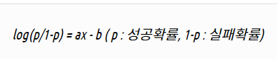
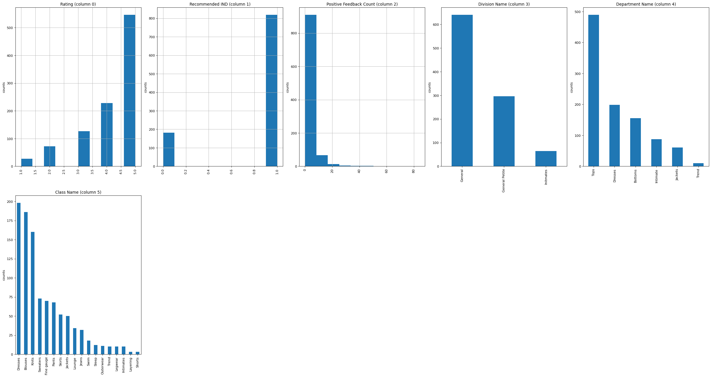
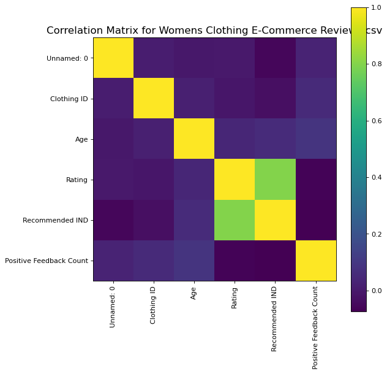
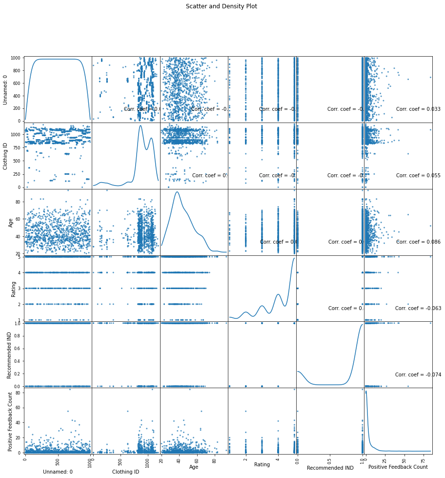

Womens Clothing E-Commerce Reviews 캐글 공부
Womens Clothing E-Commerce Reviews 캐글 공부
캐글 - (https://www.kaggle.com/kavita5/review_ecommerce)
sentiment analytics
import numpy as np
import pandas as pd
# csv 읽어오기/ 디렉토리 위치 넣어줌
import os
print(os.listdir("./data"))
['20211012_182601_1.png', 'Womens Clothing E-Commerce Reviews.csv']
!pip install --upgrade pip
Requirement already satisfied: pip in c:\users\mycom\anaconda3\envs\text_analysis\lib\site-packages (21.3)
# !pip install scikit-learn
데이터 분석에 많이 사용하는 라이브러리 소개
-
import LogisticRegression
-
데이터가 특정 카테고리에 속할지를 0과 1사이의 연속적인 확률로 예측하는 회귀 알고리즘 그럼 다음, 확률에 기반하여 특정 데이터가 어떤 카테고리에 속할지를 결정하게 되고, 궁극적으로 classifiacion 문제를 풀게 된다
-
이메일이 스팸일지 아닐지를 예측 가능
-
from IPython.display import Image
Image("C://Users/MyCom/jupyter-tutorial/kaggle/Womens Clothing E-Commerce Reviews/data/20211012_182601_1.png")

-
import SGDClassifier
-
확률적 경사하강법(SGD, Stochastic Gradient Descent)을 이용하여 선형모델을 구현
-
계산값을 기반으로 계산값이 0보다 작으면 -1,0보다 크면 1로 분류한다
-
import nltk # 자연어 처리 라이브러리
import random
#scikitlearn에서 classifier 불러오기 / nltk 에서 scikitlearn 적용시키는 라이브러리
from nltk.classify.scikitlearn import SklearnClassifier
#토픽 모델링을 위한 라이브러리
#리스트나 클래스 같은 텍스트가 아닌 자료형을 파일로 저장하기 위해 사용하는 라이브러리
import pickle
#선형 모델과 유사, 각 특성을 개별로 취급해 파라미터를 학습하고 각 특성에서 클래스별 통계를 단순하게 취합
#scikit-learn에 구현된 나이브 베이즈 분류기는 GaussianNB, BernoulliNB, MultinomialNB 이렇게 세 가지
from sklearn.naive_bayes import MultinomialNB, BernoulliNB
from sklearn.linear_model import LogisticRegression, SGDClassifier
#SVM(벡터 머신 지원) - 분류, 회귀, 특이 치 탐지에 사용되는 일련의 감독 학습 방법
#SVC , NuSVC 및 LinearSVC 는 데이터 세트에서 이진 및 다중 클래스 분류를 수행 할 수있는 클래스입니다.
from sklearn.svm import SVC, LinearSVC, NuSVC
from nltk.classify import ClassifierI
from statistics import mode # mean, median 계산할때 사용하는 라이브러리
from nltk.tokenize import word_tokenize
Axes3D 라이브러리 참고 사이트 - (https://matplotlib.org/2.0.2/mpl_toolkits/mplot3d/api.html)
- import Axes3D 설치 참고 사이트 (https://pypi.org/project/mplot3d-dragger/)
! pip install mplot3d-dragger
Collecting mplot3d-dragger
Downloading mplot3d_dragger-0.0.0-py3-none-any.whl (3.3 kB)
Installing collected packages: mplot3d-dragger
Successfully installed mplot3d-dragger-0.0.0
from mpl_toolkits.mplot3d import Axes3D # 3D matplotlib 라이브러리
from sklearn.preprocessing import StandardScaler
#StandardScaler
#1.각 특성의 평균을 0,분산을 1로 변경
#2.최솟값과 최댓값의 크기를 제한 하지 않는다.
import matplotlib.pyplot as plt
import seaborn as sns
import numpy as np
import os
import pandas as pd
print(os.listdir("./data"))
['20211012_182601_1.png', 'Womens Clothing E-Commerce Reviews.csv']
def plotPerColumnDistribution(df, nGraphShown, nGraphPerRow):
nunique = df.nunique() # 데이터에 고유값들의 수를 출력해주는 함수
# 고유값들의 수가 1과 50사이인 colunms들을 선택한다
df = df[[col for col in df if nunique[col] > 1 and nunique[col] < 50]]
nRow, nCol = df.shape
columnNames = list(df)
nGraphRow = (nCol + nGraphPerRow -1) / nGraphPerRow
plt.figure(num = None, figsize = (6 * nGraphPerRow, 8 * nGraphRow), dpi = 80, facecolor = 'w', edgecolor = 'k')
for i in range(min(nCol, nGraphShown)):
plt.subplot(nGraphRow, nGraphPerRow, i + 1)
columnDf = df.iloc[:, i]
# issubdtype(arg1,arg2) 는 return으로 Boolean result
if (not np.issubdtype(type(columnDf.iloc[0]), np.number)):
valueCounts = columnDf.value_counts()
valueCounts.plot.bar()
else:
columnDf.hist()
plt.ylabel('counts')
plt.xticks(rotation = 90)
plt.title(f'{columnNames[i]} (column {i})')
plt.tight_layout(pad = 1.0, w_pad = 1.0, h_pad = 1.0)
plt.show()
# Correlation matrix (상관관계 분석 시각화)
def plotCorrelationMatrix(df, graphWidth):
filename = df.dataframeName
df = df.dropna('columns') # drop columns with NaN
df = df[[col for col in df if df[col].nunique() > 1]] # keep columns where there are more than 1 unique values
if df.shape[1] < 2:
print(f'No correlation plots shown: The number of non-NaN or constant columns ({df.shape[1]}) is less than 2')
return
corr = df.corr()
plt.figure(num=None, figsize=(graphWidth, graphWidth), dpi=80, facecolor='w', edgecolor='k')
corrMat = plt.matshow(corr, fignum = 1)
plt.xticks(range(len(corr.columns)), corr.columns, rotation=90)
plt.yticks(range(len(corr.columns)), corr.columns)
plt.gca().xaxis.tick_bottom()
plt.colorbar(corrMat)
plt.title(f'Correlation Matrix for {filename}', fontsize=15)
plt.show()
# Scatter and density plots
def plotScatterMatrix(df, plotSize, textSize):
df = df.select_dtypes(include =[np.number]) # keep only numerical columns
# Remove rows and columns that would lead to df being singular
df = df.dropna('columns')
df = df[[col for col in df if df[col].nunique() > 1]] # keep columns where there are more than 1 unique values
columnNames = list(df)
if len(columnNames) > 10: # reduce the number of columns for matrix inversion of kernel density plots
columnNames = columnNames[:10]
df = df[columnNames]
ax = pd.plotting.scatter_matrix(df, alpha=0.75, figsize=[plotSize, plotSize], diagonal='kde')
corrs = df.corr().values
for i, j in zip(*plt.np.triu_indices_from(ax, k = 1)):
ax[i, j].annotate('Corr. coef = %.3f' % corrs[i, j], (0.8, 0.2), xycoords='axes fraction', ha='center', va='center', size=textSize)
plt.suptitle('Scatter and Density Plot')
plt.show()
nRowsRead = 1000 # specify 'None' if want to read whole file
# Womens Clothing E-Commerce Reviews.csv has 23486 rows in reality, but we are only loading/previewing the first 1000 rows
df1 = pd.read_csv('./data/Womens Clothing E-Commerce Reviews.csv', delimiter=',', nrows = nRowsRead)
df1.dataframeName = 'Womens Clothing E-Commerce Reviews.csv'
nRow, nCol = df1.shape
print(f'There are {nRow} rows and {nCol} columns')
There are 1000 rows and 11 columns
df1.head(5)
| Unnamed: 0 | Clothing ID | Age | Title | Review Text | Rating | Recommended IND | Positive Feedback Count | Division Name | Department Name | Class Name | |
|---|---|---|---|---|---|---|---|---|---|---|---|
| 0 | 0 | 767 | 33 | NaN | Absolutely wonderful - silky and sexy and comf... | 4 | 1 | 0 | Initmates | Intimate | Intimates |
| 1 | 1 | 1080 | 34 | NaN | Love this dress! it's sooo pretty. i happene... | 5 | 1 | 4 | General | Dresses | Dresses |
| 2 | 2 | 1077 | 60 | Some major design flaws | I had such high hopes for this dress and reall... | 3 | 0 | 0 | General | Dresses | Dresses |
| 3 | 3 | 1049 | 50 | My favorite buy! | I love, love, love this jumpsuit. it's fun, fl... | 5 | 1 | 0 | General Petite | Bottoms | Pants |
| 4 | 4 | 847 | 47 | Flattering shirt | This shirt is very flattering to all due to th... | 5 | 1 | 6 | General | Tops | Blouses |
plotPerColumnDistribution(df1,10, 5)
C:\Users\MyCom\anaconda3\envs\text_analysis\lib\site-packages\ipykernel_launcher.py:13: MatplotlibDeprecationWarning: Passing non-integers as three-element position specification is deprecated since 3.3 and will be removed two minor releases later.
del sys.path[0]
C:\Users\MyCom\anaconda3\envs\text_analysis\lib\site-packages\ipykernel_launcher.py:13: MatplotlibDeprecationWarning: Passing non-integers as three-element position specification is deprecated since 3.3 and will be removed two minor releases later.
del sys.path[0]
C:\Users\MyCom\anaconda3\envs\text_analysis\lib\site-packages\ipykernel_launcher.py:13: MatplotlibDeprecationWarning: Passing non-integers as three-element position specification is deprecated since 3.3 and will be removed two minor releases later.
del sys.path[0]

plotCorrelationMatrix(df1, 8)

plotScatterMatrix(df1, 15,10)
